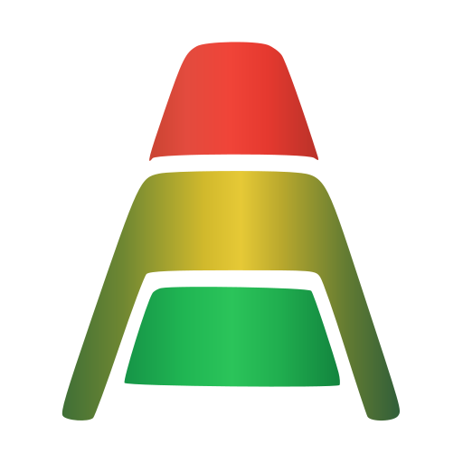

Custom software & applications
Business applications, internal tools, customer portals, and web platforms designed around the people and processes they serve.
Software. Systems. Practical AI.
Turn operational challenges into practical software—connecting systems, improving workflows, and putting AI to work where it makes a difference.
Built around how your business actually operates.
From scattered inputs
to a dependable way forward.
01 / What we do
Repeated data entry. Reports assembled by hand. Software that no longer fits. An idea that needs a working application.
We help define the problem, choose a sensible approach, and build something your team can use and maintain.
See a practical exampleBusiness applications, internal tools, customer portals, and web platforms designed around the people and processes they serve.
Connect ERP systems, databases, APIs, and existing applications. Improve what works and replace the pieces that hold the business back.
Put AI and automation to practical use with documents, business knowledge, and repeatable tasks—with clear permissions, review points, and records of what happened.
Turn scattered information into useful reports and dashboards, with agreed definitions and a clear connection to the underlying data.
Turn an idea or difficult technical decision into a workable plan. Review existing systems, resolve reliability problems, and establish a foundation that can grow.
A free tool for your next step
Tell us about a task your team repeats. Get a practical starting point for improving it—with the systems involved, where AI might help, and the decisions that should stay with your people.
Find my first automation Open to everyone. No account or email required.02 / See the work, not just the words
A supplier acknowledgement arrives. Someone needs to check it against the purchase order. A useful tool can surface the differences and leave the decision with the right person.
Try this illustrative comparison. It uses sample data and explicit rules; it does not connect to an ERP or change any records.
Explore this example’s opportunity briefAluminum housing · Line 01
| Field | Purchase order | Acknowledged |
|---|---|---|
| Quantity | 120 | 100 |
| Unit price | $24.00 | $24.00 |
| Delivery date | Nov 18 | Nov 24 |
2 differences need a closer look
Checks quantity, unit price, and delivery date only. Other terms need their usual review.
03 / How we work
Work directly with the person building your solution. Clear scope, useful stages, and a practical handoff.
Walk through the process, the people, the systems, and the exceptions. Agree on what a useful result looks like.
Deliver in bounded, working stages. Test the normal path and the difficult cases with the people who will use it.
Document how it works, make failures visible, and provide the knowledge your team needs to maintain it.
The technical foundation
Our development stack spans Python, TypeScript, JavaScript, C#/.NET, Swift, SQL, HTML, and CSS, with React and Next.js supporting our web applications. We apply these across business software, AI systems, native applications, and our development of Andonity—alongside hands-on Epicor ERP, SQL Server, and API integration work.
04 / What we’re developing

AndonityA platform by
Next Level Software Solutions.
Andonity is the platform we’re developing to help organizations make their knowledge, business rules, responsibilities, and work more explicit and usable.
Our aim is to connect organizational understanding with accountable action—helping people and AI carry work forward with clear authority, persistent context, and evidence of what happened.
Explore AndonityAn independent technical partner
Next Level Software Solutions LLC is led by Michael Jackson, a software solutions architect based in Santa Clarita, California.
We bring hands-on engineering and a practical understanding of business operations to each engagement. That means asking useful questions, making technical decisions understandable, and building software that remains dependable after the initial delivery.
Let’s make the next step concrete
Tell us what is slowing your team down, what needs to connect, or what you would like to build.
Start a conversationOpens your email app.
Software Solutions Architect
Santa Clarita, California